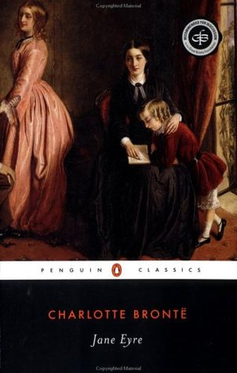
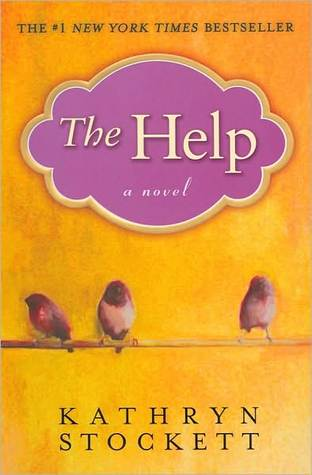
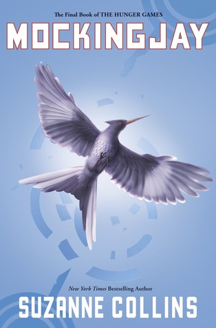

Read book reviews by me and dont forget to leave your comments !!
Jane Eyre by Charlotte Bronte
Orphaned into the household of her Aunt Reed at Gateshead, subject to the cruel regime at Lowood charity school, Jane Eyre nonetheless emerges unbroken in spirit and integrity. She takes up the post of governess at Thornfield, falls in love with Mr. Rochester, and discovers the impediment to their lawful marriage in a story that transcends melodrama to portray a woman's passionate search for a wider and richer life than Victorian society traditionally allowed. With a heroine full of yearning, the dangerous secrets she encounters, and the choices she finally makes, Charlotte Bronte's innovative and enduring romantic novel continues to engage and provoke readers
The detailed exploration of a strong female character's consciousness has made readers in recent decades consider Jane Eyre as an influential feminist text. The novel works both as the absorbing story of an individual woman's quest and as a narrative of the dilemmas that confront so many women. Read More..
The Help by Kathryn Stokett
In pitch-perfect voices, Kathryn Stockett creates three extraordinary women whose determination to start a movement of their own forever changes a town, and the way women - mothers, daughters, caregivers, friends - view one another. A deeply moving novel filled with poignancy, humor, and hope, The Help is a timeless and universal story about the lines we abide by, and the ones we don't.
Twenty-two-year-old Skeeter has just returned home after graduating from Ole Miss. She may have a degree, but it is 1962, Mississippi, and her mother will not be happy till Skeeter has a ring on her finger. Skeeter would normally find solace with her beloved maid Constantine, the woman who raised her, but Constantine has disappeared and no one will tell Skeeter where she has gone.Read More..
.
Mokingjay by Suzanne Collins
This is the third book in the Hunger Games series.Katniss Everdeen, girl on fire, has survived, even though her home has been destroyed. Gale has escaped. Katniss's family is safe. Peeta has been captured by the Capitol. District 13 really does exist. There are rebels. There are new leaders. A revolution is unfolding.It is by design that Katniss was rescued from the arena in the cruel and haunting Quarter Quell, and it is by design that she has long been part of the revolution without knowing it. District 13 has come out of the shadows and is plotting to overthrow the Capitol. Everyone, it seems, has had a hand in the carefully laid plains--except Katniss.The success of the rebellion hinges on Katniss's willingness to be a pawn, to accept responsibility for countless lives, and to change the course of the future of Panem. Read More..
Archives :
Search by Keywords :